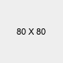

Lavorazione dei Terreni Agricoli
Guida Completa per Terreni Pugliesi

- Tecniche Agricole
- Gennaio 2026
- L'Agrimeccanica
- 5 min lettura
Lavorazione dei Terreni Agricoli in Puglia: Guida Completa dalla Preparazione alla Semina
La resa del raccolto inizia dalla corretta preparazione del terreno. Con i macchinari giusti e le tecniche appropriate, anche i terreni difficili delle Murge possono dare ottimi risultati. I terreni pugliesi, in particolare quelli delle Murge, presentano caratteristiche specifiche: sono calcarei, spesso sassosi, con scarsa disponibilità idrica. Queste condizioni richiedono attenzione particolare in ogni fase della lavorazione.
In questa guida completa vi accompagneremo attraverso l'intero ciclo di lavorazione: dalla preparazione autunnale con aratura e concimazione, passando per l'affinamento del terreno con erpicatura e rullatura, fino alla semina perfetta. Ogni fase è fondamentale e una corretta esecuzione fa la differenza tra un raccolto abbondante e uno deludente.
Settembre-Ottobre: La Base di Tutto
Aratura: Il ciclo inizia in autunno, tra settembre e ottobre, subito dopo la raccolta della coltura precedente. L'aratura deve essere eseguita a una profondità di 20-40 cm, a seconda del tipo di terreno e della coltura che si intende seminare. Gli obiettivi principali sono rivoltare gli strati superficiali del suolo, interrare i residui della coltura precedente, rompere il compattamento causato dal passaggio dei mezzi agricoli e arieggiare il terreno.
Per i terreni delle Murge è importante considerare la presenza di sassi e roccia affiorante, che richiedono aratri robusti e ben calibrati. Negli ultimi anni si stanno diffondendo tecniche alternative come la minima lavorazione o lo strip-till, che conservano meglio la struttura del suolo e riducono i consumi, ma per la maggior parte delle aziende l'aratura tradizionale rimane la scelta migliore.
Concimazione di fondo: Subito dopo l'aratura, prima delle erpicature, è il momento della concimazione di fondo. Si può utilizzare concime organico (letame maturo o compost) oppure concime minerale (formulati NPK). L'obiettivo è fornire al terreno fosforo e potassio di base, elementi che vengono assorbiti lentamente e devono essere disponibili per tutta la stagione colturale.
Nei terreni poveri delle Murge, la concimazione organica è particolarmente importante per arricchire la sostanza organica, migliorare la struttura del suolo e aumentare la capacità di ritenzione idrica. Il concime viene poi interrato con le successive lavorazioni complementari, distribuendolo in modo uniforme negli strati superficiali dove le radici lo potranno assorbire.
Una buona aratura e concimazione di fondo sono investimenti che si vedono nel raccolto. Non risparmiate su questa fase: è il fondamento di tutto. Consiglio dell'Esperto
Novembre: Preparare il Letto di Semina Perfetto
Erpicatura: L'erpicatura va eseguita 2-3 settimane prima della semina, generalmente in novembre. Si tratta di una lavorazione superficiale, a profondità di 5-15 cm, che ha obiettivi fondamentali per il successo della semina: sminuzzare le zolle rimaste dopo l'aratura, livellare la superficie del terreno, eliminare le infestanti emergenti, rimescolare il concime distribuito e preparare un letto di semina fine e uniforme.

Esistono diverse tipologie di erpici. Gli erpici a denti sono ideali per terreni poco compatti e leggeri. Gli erpici a dischi (frangizolle) sono perfetti per i terreni duri e sassosi delle Murge, dove riescono a lavorare efficacemente anche in condizioni difficili. Gli erpici rotanti permettono un affinamento completo in un solo passaggio, ma richiedono più potenza dal trattore.
Per i terreni delle Murge sono necessari vomeri robusti anti-sassi e la possibilità di regolare la profondità di lavoro in base alle condizioni specifiche del campo. Un buon erpice deve saper affrontare i sassi senza rompersi e senza lasciare zolle troppo grandi che comprometterebbero la semina.
Rullatura: Dopo l'erpicatura, prima della semina, è fondamentale eseguire la rullatura. Gli obiettivi sono frantumare le ultime zollette superficiali, rassodare leggermente il terreno per ridurre la sofficità eccessiva, livellare perfettamente la superficie per facilitare la semina uniforme e far aderire meglio le particelle di terra al seme, favorendo la germinazione.

Anche per i rulli esistono diverse tipologie. I rulli lisci (compressori) esercitano una compressione leggera e uniforme. I rulli a gabbia sono perfetti per il clima arido pugliese, in quanto frantumano le zolle senza compattare eccessivamente, mantenendo una buona porosità del terreno. I rulli frangizolle hanno un'azione più energica su terreni molto zollosi.
ATTENZIONE: non usare rulli su terreni argillosi troppo umidi, perché si rischia di formare una crosta superficiale impermeabile che impedisce l'emergenza delle plantule e l'infiltrazione dell'acqua piovana.
Erpicatura e rullatura sono le operazioni che fanno la differenza tra un letto di semina mediocre e uno ottimale. Non sottovalutate mai queste fasi. Consiglio dell'Esperto
Novembre-Dicembre: Il Momento Critico
Epoca ottimale: In Puglia, l'epoca ottimale per la semina dei cereali va da metà novembre a inizio dicembre. Seminare troppo presto espone le piantine al rischio di caldo eccessivo e agli attacchi di insetti autunnali. Seminare troppo tardi comporta poco accestimento e, di conseguenza, rese inferiori. Rispettare la "finestra" ottimale è fondamentale per massimizzare il potenziale produttivo.

Profondità di semina: La profondità ideale per la semina dei cereali è di 2,5-4 cm. Se il seme viene depositato troppo in profondità, la pianta emerge stentata e l'accestimento sarà ridotto. Se viene depositato troppo in superficie, c'è il rischio di disseccamento del seme in caso di periodi siccitosi e di predazione da parte degli uccelli.
Ma l'aspetto più importante è la costanza: la profondità deve essere COSTANTE su tutto il campo, anche su terreni irregolari o sassosi. Solo utilizzando seminatrici di qualità si ottiene questa uniformità, che si traduce in emergenza simultanea e sviluppo omogeneo delle piante.
Densità corretta: La densità di semina dipende da vari fattori: varietà di grano scelta, epoca di semina, disponibilità idrica del terreno. L'obiettivo finale è arrivare a raccolta con 600-700 spighe per metro quadrato. Come regola generale, con una semina precoce si può usare meno seme, perché la pianta ha più tempo per accestire e compensare. Con una semina tardiva serve più seme, perché c'è meno tempo per l'accestimento.
Il calcolo va fatto in base al peso dei 1000 semi della varietà scelta e alla germinabilità dichiarata. Una seminatrice ben calibrata garantisce la distribuzione esatta della quantità desiderata, senza sprechi e senza fallanze.
Una semina precisa, con la profondità e densità corrette, è possibile solo con seminatrici affidabili e ben regolate. Non lasciate nulla al caso. Consiglio dell'Esperto
Le Attrezzature Giuste Fanno la Differenza
I terreni delle Murge presentano sfide specifiche: presenza di sassi, terreno duro e compatto, scarsa disponibilità d'acqua. Per lavorare in queste condizioni servono macchine robuste, progettate specificamente per affrontare queste difficoltà senza rompersi e garantendo risultati ottimali.

Erpici per terreni duri: Da 30 anni produciamo erpici classici e erpici pesanti specifici per i terreni pugliesi. Le caratteristiche che li rendono unici sono i vomeri studiati per funzionare al meglio anche su terreni sassosi, la profondità regolabile per adattarsi alle diverse esigenze colturali, il telaio robusto che resiste alle sollecitazioni continue dei sassi e la costruzione artigianale con materiali di prima qualità.
Il risultato è un letto di semina perfettamente affinato e livellato, anche nelle condizioni più difficili. Consulta il nostro catalogo completo di erpici classici e erpici speciali per trovare il modello più adatto alle tue esigenze.
Seminatrici di precisione: Le nostre seminatrici sono progettate per garantire precisione assoluta anche su terreni difficili. Le caratteristiche vincenti sono gli stivali per la semina che riescono a creare un buon solco anche in presenza di sassolini, la pressione del gambale registrabile che si adatta automaticamente alla durezza del terreno, la deposizione del seme a profondità costante (2,5-4 cm) e la distribuzione uniforme anche su terreno irregolare.
Il risultato è un'emergenza uniforme su tutto il campo, nessuna fallanza, e quindi la resa ottimale che ogni agricoltore desidera. Scopri tutti i nostri modelli nella sezione Seminatrici.
Rulli costipatori: I nostri rulli completano la preparazione del letto di semina, garantendo la giusta compattezza senza eccedere. Sono disponibili in diverse tipologie: lisci per compressione uniforme, a gabbia ideali per il clima pugliese, a spuntoni per azione frangizolle. Vedi tutti i modelli nella sezione Rulli.
Macchine artigianali robuste, pensate per durare e per funzionare nelle condizioni reali dei nostri terreni. Questa è la nostra filosofia da 30 anni. L'Agrimeccanica
Gli Errori che Compromettono il Raccolto
Errori nella preparazione del terreno:
- ❌ Lavorare il terreno troppo bagnato: provoca compattamento irreversibile degli strati profondi
- ❌ Erpicatura troppo anticipata: le infestanti ricrescono prima della semina, vanificando il lavoro
- ❌ Rullatura su terreni argillosi umidi: formazione di crosta dura che impedisce l'emergenza
- ❌ Letto di semina troppo soffice o troppo zolloso: distribuzione irregolare del seme e fallanze
Errori nella semina:
- ❌ Seminare troppo presto o troppo tardi: riduzione significativa delle rese
- ❌ Profondità sbagliata: emergenza irregolare e piante stentate
- ❌ Densità errata: buchi nel campo (troppo poca) o allettamento (troppo alta)
- ❌ Usare seminatrici non adatte ai terreni sassosi: rotture frequenti, fallanze, perdite di tempo
Con le macchine giuste e seguendo le corrette tempistiche, tutti questi errori si evitano facilmente. L'investimento in attrezzature di qualità si ripaga rapidamente con raccolti migliori e minori costi di gestione.
Prepara al Meglio i Tuoi Terreni
La lavorazione del terreno è un ciclo integrato: ogni fase dipende dalla precedente e tutte contribuiscono al risultato finale. Aratura, erpicatura, rullatura e semina devono essere eseguite correttamente, con i tempi giusti e soprattutto con i macchinari adeguati.
I terreni delle Murge richiedono attenzione particolare e macchinari specifici, capaci di affrontare sassi, durezza e scarsa disponibilità idrica. Da 30 anni L'Agrimeccanica produce attrezzature pensate proprio per queste condizioni, combinando robustezza artigianale e precisione operativa.
Contattaci per un preventivo personalizzato su erpici, seminatrici e rulli. Oppure consulta il nostro catalogo prodotti per trovare la macchina più adatta alle tue esigenze.
Related Posts

Comments (02)
